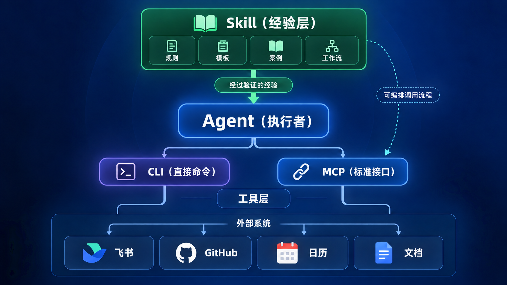

展开本页目录
本页已完整同步飞书课程修订号 693 的正文与公开图片，无需登录飞书即可阅读。飞书原文仅作为来源与版本核对入口。
查看飞书来源 ↗🎯 这节课，我们不再只是把项目“管好”
第二节课里，我花了很大篇幅讲 AGENTS.md、项目规则、Git、任务边界和验收。
它们解决的是一个非常基础的问题：
但一个项目被管理得再规范，也不代表它已经足够强。
一个守规矩的 Agent，如果没有合适的工具，仍然只能在项目文件里打转；如果没有经过验证的工作方法，每遇到一项复杂任务，它仍然需要重新摸索一遍。
所以第三节课，我们要继续往前走一步。
这一次，我们要给 Agent 加上两样东西：
- 你和其他人过去积累下来的经验；
- 能够真正进入现实工作的外部工具。
对应到今天的三个主角，就是：
- Skill；
- MCP；
- CLI。
它们真正有价值的地方，不是名字听起来高级，也不是能让你的 Agent 工具栏多出几个选项。
它们最大的作用是：
从 2026 年 6 月左右开始，我在飞书上的公开文章，以及 GitHub 上发布的公开项目和私人项目，基本都已经是直接让 Agent 完成的。
我人工几乎不再做上传文件、复制内容和反复调整格式这些机械操作。
这才是我理解中的 AI 效率提升：
不是让 AI 再帮我写一段文字，而是让它真正接过一段原来必须由我亲手完成的工作流程。
这节课学完以后，你不需要成为 MCP 开发者，也不需要背下一堆命令。
你真正需要学会的是：怎样判断自己缺少经验还是缺少工具，怎样把合适的能力交给 Agent，以及怎样让这些能力组合成一套下次还能继续使用的工作流。
📦 这节课你最终会得到什么
- 能用普通话解释 Skill、MCP 和 CLI 的区别；
- 找到并检查一个真正适合自己的 Skill；
- 让 Agent 找到并调用一个真实 CLI；
- 理解 MCP 怎样连接飞书、日历、数据库等外部服务；
- 形成一条“经验＋工具＋Agent”的工作流；
- 知道哪些权限可以给，哪些操作必须先停下来确认。
这节课的目标，不是要求每个人一天之内把三个东西全部装满。
真正的验收是：
💡 先用最简单的话，讲清三个概念
📘 Skill：给 Agent 的工作手册
Skill 可以理解成一份交给 Agent 的工作手册。
它会告诉 Agent：
- 什么情况下使用它；
- 先做什么，后做什么；
- 遇到不同情况怎样判断；
- 最后应该交付什么；
- 怎样检查结果是不是真的完成了。
最简单的 Skill，可以只是一段你已经反复验证过的提示词。
例如，你每次写文章都要反复提醒 AI：不要编造第一人称经历、先提取事实、标题不要夸张、最后检查引用。与其每次重新输入，不如把这些要求整理成一个 Skill。
更完整的 Skill，还可以包含：
- 模板；
- 优秀案例；
- 反面案例；
- 检查清单；
- 脚本；
- 参考资料；
- MCP 或 CLI 的调用流程。
所以 Skill 并不只是“高级提示词”。
它更像一个真正做过很多次这项工作的老师傅，把自己的经验、判断和操作顺序全部写了下来。
⌨️ CLI：在终端里直接操作工具
CLI 是 Command Line Interface，也就是命令行界面。
这个名字听起来很技术，但你可以把它理解成：
一个软件专门开放在终端里的操作窗口。
例如：
gh repo view
lark-cli auth status人可以在终端里输入这些命令，Agent 也可以。
网页操作经常需要打开页面、找按钮、点击菜单、等待加载；CLI 则更像是直接告诉软件：“现在执行这个动作，并把结果用清楚的文字返回给我。”
正因为命令明确、结果容易检查，CLI 特别适合交给 Agent 调用。
🔌 MCP：让 Agent 认识外部工具的通用连接方式
MCP 的全称是 Model Context Protocol。
普通用户不需要背这个英文，只要先记住：
MCP 是一种让 Agent 连接外部工具和数据的通用协议。
过去，每个 Agent 想连接飞书、数据库、日历或其他系统，都可能要单独开发一套连接方式。
MCP 做的事情，就是尽量统一这套连接方法，让 Agent 能够看见：
- 这里有哪些工具；
- 每个工具需要哪些参数；
- 可以读取什么；
- 可以修改什么；
- 调用后会返回什么。
MCP 有两种常见连接形态：远程 MCP 通常会提供一个连接地址；本地 MCP 则可能由 Agent 在电脑上启动一个程序。无论采用哪种形态，它们都在为 Agent 提供一份能够发现和调用外部工具的标准接口。

🍜 MCP 和 CLI 很像，到底差在哪？
MCP 和 CLI 都可以成为 Agent 的“手”，所以第一次接触时，很多人会觉得它们几乎是同一个东西。
我们用一家餐厅来解释。
CLI 像是你直接走到后厨的窗口，对里面明确说：
一份炒饭，不要辣，现在开始做。
命令、参数和结果都比较直接。
MCP 则像餐厅专门给 Agent 准备了一份标准菜单。菜单会告诉它：
- 现在有哪些菜；
- 每道菜可以选择哪些口味；
- 下单时必须填写什么；
- 最后会拿到什么。
Agent 不需要提前背下每一家餐厅的全部命令，它可以先读取菜单，再选择合适的工具。
而 Skill 更像店长写下来的服务流程：
客人进来以后先问什么，什么情况下推荐套餐，怎样确认忌口，上菜后怎样检查，遇到投诉怎样处理。
所以三者的关系可以压缩成四句话：
🧠 Skill 真正提供的，是模型没有自动拥有的“经验”
很多人对大模型有一个误解：
模型已经学习了那么多知识，我为什么还要给它安装 Skill？
因为知识和经验不是一回事！忘记的同学请去我的微信公众号「海绵朋克」找课程系列里的《经验论》反复观看！
模型可能知道怎样写文章、怎样检查代码、怎样整理会议纪要。但它不会天然知道：
- 你所在项目真正采用哪套流程；
- 你已经试过哪些方法；
- 哪些方法在你的环境里失败过；
- 你最终为什么选择现在这套方案；
- 什么结果在你这里才算合格；
- 哪些风险必须提前拦住。
这些东西，才是你在真实工作中积累出来的经验。
一个好的 Skill，就是把这些经验从某个人的大脑、某一次聊天和某一个偶然成功里拿出来，变成 Agent 可以重复读取和执行的工作方法。
这会产生一个非常明显的变化。
没有 Skill 时，你每次都需要重新解释：
先检查这个，再读取那个；
不要直接修改；
输出必须包含哪些部分；
出现什么情况需要停下来；
最后怎样验收。有了 Skill 以后，你可以直接告诉 Agent：
调用 XXX Skill 完成这项任务。或者，当你的任务触发了 Skill 中写明的适用场景时，由 Agent 自动识别并调用。
不同 Agent 对 Skill 的安装位置、触发方式和 / 命令支持并不完全一样。因此，显式说出 Skill 名称通常是最稳妥的开始方式。
🧰 Skill 里到底可以装些什么？
Skill 的能力可以分成四层。
💬 第一层：固定提示词
把一段每次都要重复输入的高质量要求保存下来。
它解决的是“不要每次重新解释”。
🗂️ 第二层：模板和案例
除了告诉 Agent 应该怎么做，还给它看：
- 正确结果长什么样；
- 哪些结果不合格；
- 输出应该采用什么结构；
- 不同场景如何替换输入。
它解决的是“不要只讲原则，要给出参照物”。
⚙️ 第三层：脚本和工具
Skill 可以附带用于检查、转换或处理文件的脚本。
它解决的是“有些事情不应该只靠模型猜，而应该交给确定性的程序执行”。
🔗 第四层：编排 MCP 和 CLI
Skill 可以写明：
- 先通过飞书 MCP 或
lark-cli获取资料； - 再按什么标准筛选；
- 然后用
gh检查或处理 GitHub 项目； - 最后按照什么格式生成结果；
- 哪些外部写入动作必须先让用户确认。
这时候，Skill 就不再只是一份提示词，而是一套真正的工作流程。
不过要注意：
Skill 可以编排 MCP，但不代表 MCP 一定被“装在 Skill 里面”。
真正的 MCP 服务通常仍然需要单独安装、配置和授权。Skill 负责告诉 Agent 什么时候用、怎样用，以及用完以后如何处理结果。
🔎 普通人怎样找到一个靠谱的 Skill？
目前 Skill 还没有一个覆盖所有 Agent、所有平台的统一安装中心。
你可能在 GitHub、Gitee、Agent 官方市场、个人网站、微信公众号、小红书或某个开源项目中看到它们。
一般来说，GitHub 上的公开信息更加完整：你可以看到代码、更新时间、Issue、版本和其他人的使用情况。没有稳定网络条件时，也可以搜索 Gitee 或其他可信来源。
找 Skill 这件事本身，不需要你一个仓库一个仓库地翻。
你可以直接让 Agent 替你搜索、比较和检查。
把下面这段提示词交给它【以在github上查找为例，其余网站同理】：
帮我在 GitHub 上查找一个用于【XXX】的 Agent Skill。
请优先选择最近1/2/3/6个月仍在维护、有真实使用示例、兼容我当前 Agent
和 Windows 环境的项目。Star 数量尽可能多，最好能多于10k，否则就找星星最多的项目。
先不要安装。请列出候选 Skill，并分别检查：
1. 来源和维护者；
2. 最近更新时间；
3. 安装方式；
4. 包含的文件和脚本；
5. 需要的权限；
6. 是否会访问网络、账号或敏感目录；
7. 适合什么场景；
8. 已知风险和替代方案。
等我确认后再安装。请注意，之所以找到后人工再确认一下，是因为可能满足需求的Skill有很多，建议你挑选一下，以及防止真的有人会在skill内部留后门，让AI先替你读一遍。
⚠️ 不要追求安装数量
我确实建议大家多了解、多尝试 Skill，但不是把找到的 Skill 全部塞进 Agent。
Skill 装得越多，可能出现的问题也越多：
- 不同 Skill 的规则互相冲突；
- Agent 触发了错误的流程；
- 某个 Skill 附带危险脚本；
- Skill 读取了不需要访问的目录；
- 旧 Skill 长期不维护，里面的命令已经失效。
正确做法是：
🛠️ 你也可以制作自己的 Skill
当你已经把某件事情重复做过几次，并且逐渐形成了固定步骤，就可以考虑把它制作成 Skill。
当前 主流的Agent 都内置了用于创建 Skill 的能力，可以帮助你按照正确的目录和文件规范搭出基础结构。
但“格式正确”和“工程上真的好用”不是一回事。
一个好用的 Skill 还需要继续检查：
- 安全性；
- 触发范围；
- 输入是否明确；
- 缺少文件时会不会盲目执行；
- 脚本是否稳定；
- 输出是否可验收；
- 外部权限是否过大；
- 以后还能不能维护。
我自己制作了一套 skill-mentor，并发布在 GitHub 和 Gitee。它除了检查 Skill 的格式，还会从安全、稳定、可维护和实际工作使用等角度继续审计。
安装以后，每次要创建或改进 Skill 时，建议直接说：
请调用 skill-mentor，帮我制作并检查一个用于【XXX】的 Skill。显式指定 Skill，通常比期待 Agent 每次都能自动触发更可靠。
🔌 MCP 真正厉害的地方：让 Agent 进入真实业务系统
如果说 Skill 是经验，那么 MCP 和 CLI 提供的就是工具。
没有外部工具时，Agent 可能只能：
- 读取你手动交给它的文件；
- 在当前项目目录里修改内容；
- 给你一段建议，让你自己去执行。
连接外部系统以后，它可以进一步：
- 查询日历；
- 读取文档；
- 搜索消息；
- 操作任务；
- 查询数据库；
- 调用浏览器或其他业务系统；
- 把处理结果继续写入下一环节。
这才是 MCP 真正容易拉开效率差距的地方，企业凭借MCP的优势，现在已经和消费端明显拉开了差距。
企业通常拥有更多已经数字化的数据、系统、账号、权限和标准流程。当这些资源可以通过 MCP 接入 Agent 时，Agent 能接手的就不再是一项孤立任务，而可能是一整段业务流程。
例如，一家公司使用飞书办公，如果已经完成合适的应用与权限配置，就可以让 Agent：
- 查看最近一段时间的消息；
- 找出包含明确时间、地点和参与人的事项；
- 按公司规则判断哪些内容可能成为日程；
- 先生成待确认清单；
- 用户确认以后，再写入日历。
如果再把这套判断规则整理成公司内部 Skill，整个闭环就出现了：
飞书 MCP／CLI 提供消息和日历能力
→ Skill 提供公司已经验证过的处理规则
→ Agent 读取信息并作出初步判断
→ 人确认高风险动作
→ Agent 写入日历并返回结果这就是“经验”和“工具”组合以后，Agent 项目真正变强的方式。
飞书 CLI 和飞书 MCP，现在普通人能用吗？
答案是：能。它们已经公开面向普通开发者，不过实际使用仍然包含安装、应用配置和权限授权等步骤。
飞书已经公开提供官方 lark-cli，也公开提供官方 OpenAPI MCP。
lark-cli 可以通过命令操作消息、文档、多维表格、电子表格、日历、邮件、任务和会议等能力。官方 MCP 则把飞书开放平台的一部分接口包装成 Agent 可以调用的 MCP 工具。
但飞书 MCP 当前仍处于 Beta，而且通常需要：
- 安装 Node.js；
- 在飞书开放平台创建应用；
- 获取
App ID和App Secret； - 配置需要的权限；
- 某些场景下完成用户身份授权。
当前版本也仍有能力边界，具体可用的文件、文档和消息操作，需要以当时的官方说明和 Agent 实际读取到的工具列表为准。
如果你是第一次接触外部工具，我更建议先从 lark-cli 开始。等你理解账号、权限和只读验证以后，再继续接入飞书 MCP。
⌨️ 我最推荐普通人安装的两个 CLI
🐙 第一个：GitHub CLI，也就是 gh
gh 是 GitHub 官方命令行工具。
安装并登录以后，Agent 可以在你的授权范围内：
- 查看仓库；
- 创建和管理 Issue；
- 查看 Pull Request；
- 创建仓库；
- 上传项目；
- 管理 Release；
- 调用 GitHub API。
这也是为什么我一直强烈建议大家使用 GitHub。
GitHub 不只是一个放代码的网站。对于 Agent 来说，它还是一个拥有项目、版本、问题、协作记录和公开资产的工作平台。
第二个：飞书 CLI，也就是 lark-cli
如果你平时使用飞书办公，lark-cli 的实际价值非常高。
Agent 不再只能替你写一段准备粘贴进飞书的内容，而是可以在授权范围内真正读取和操作飞书中的对象。
这两者的区别非常大：
只生成文字：AI 给你结果，你再手动搬运。
进入工作流：AI 直接调用工具完成操作，你负责确认和验收。我从 2026 年 6 月左右开始，飞书上的公开文章，以及 GitHub 上的公开项目和私人项目，基本都已经直接由 Agent 完成。
我人工几乎没有再做上传和调整格式的操作。
这也是我为什么会把 gh 和 lark-cli 单独拿出来推荐。
它们不是让你看起来更懂技术，而是真的可以替你减少机械工作。
🪜 安装和登录，尽量让 Agent 帮你完成
CLI 的安装方式和版本会变化，因此不要死记某篇教程里的永久命令。
你可以直接告诉当前 Agent：
请联网查询 GitHub CLI 的官方 Windows 安装方法，
确认来源、版本和安装位置后替我安装。
安装完成后先检查命令是否进入 PATH，
不要登录，不要申请额外权限，等我确认下一步。飞书 CLI 也一样：
请查询飞书官方 lark-cli 当前最新的 Windows 安装说明，
确认来源和依赖后替我安装。
安装完成后检查版本和 PATH，
不要创建应用、不要登录、不要修改权限，等我确认。安装完成以后，登录步骤建议由你本人参与，因为浏览器中需要确认账号和权限。
登录方法就是在你的电脑上，点击ctrl+R，输入cmd，进入终端界面，在终端界面输入下述的按钮。
（注意，上述步骤说了，需要把它们配置到PATH中，在终端输入指令才有效，PATH指的是环境变量中的PATH，如果你不知道PATH是什么，以及如何把CLI配置进PATH中，请直接问AI，之所以不让AI来做，是因为这个步骤的安全风险较高，且AI可能没有权限做这件事，手动的效率更高。）
GitHub CLI 常见登录入口是：
【需要提醒的是，登录github时可能会遇到网络问题，报错登不上，这时候请你打开你的梯子，在输入下述代码之前，先找到你的梯子的端口号码，这个号码一般是789X这类数字，请你先输入 $env:HTTPS_PROXY = "http://127.0.0.1:7892" 然后敲回车，再输入 $env:HTTPS_PROXY = "http://127.0.0.1:7892" 敲回车，然后输入下述登录代码即可。7892请根据你自己梯子的端口配置，要么手动把梯子的改成7892，要么改成你自己的，比如7897】
gh auth login -h github.com飞书官方当前推荐的流程包含：
lark-cli auth login这些命令在课程正式发布前还要重新进行 Windows 实测。
🛡️ 权限配置
这两个CLI登录的时候，会有权限配置要求，对于普通用户，你直接把所有的配置都默认打开就行，但是如果你是企业用户，请仔细看一下权限都是什么，尤其是飞书cli，把一些没必要的权限关掉，避免工作中万一agent误操作，发生一些尴尬的事情......
不过从安全性角度来说，通常的授权原则是：
尤其是消息、通讯录、私人文档、仓库写入和公开发布权限，一旦交给 Agent，就意味着它可能在你的身份下读取或修改真实数据。
权限越大，不代表 Agent 越聪明，只代表出错时影响范围越大。
🧯 明明已经安装登录，为什么 Agent 还是说找不到？
这是 Windows 和 Agent 环境中非常高发的问题。
你明明已经在电脑上安装并登录，Agent 却告诉你：
找不到 gh
找不到 lark-cli
当前未登录这时候先不要重新安装，也不要把 Token 复制给 Agent。
原因可能不是工具坏了，而是当前 Agent 所在的环境和你刚才登录的环境不是同一个地方。
有些 Agent 运行在：
- 本机终端；
- 隔离工作区；
- 容器；
- 远程主机；
- 临时沙箱。
它看到的 PATH、文件和凭据可能与你自己的 Windows 用户环境不同。
你可以这样问：
我已经在 Windows 本机安装并登录了 lark-cli／gh，
但你当前没有找到它。
请你跳出当前沙箱，在我电脑里找一下，肯定可以找到。🚧 异常卡：安装成功，但终端提示找不到命令
你会看到： 输入 gh 或 lark-cli 后，终端提示无法识别命令。
先不要做： 不要反复安装多个版本，也不要直接手动修改系统环境变量。
先确认： 当前使用的是 PowerShell 还是 CMD，安装后是否重新打开终端，命令实际安装到了哪里。
最小修复： 关闭当前终端并重新打开，再让 Agent 检查 PATH 和可执行文件位置。
修复后验收： 版本命令可以返回真实版本，登录状态命令可以返回当前账号或明确的未登录状态。
这次应该记住： 安装完成、进入 PATH、当前 Agent 能访问，是三个不同的状态。
安装cli和mcp时是最容易出bug的，我这里没办法把所有的bug都总结清楚，所以遇到问题时，一定要勤用AI查询你的问题。
🔄 Skill＋MCP＋CLI 怎样形成真正的闭环？
我们回到一个最现实的例子：内容生产。
如果只使用普通聊天 AI，流程可能是：
你把资料发给 AI
→ AI 生成一篇文章
→ 你复制到飞书
→ 你手动调整格式
→ 你准备 GitHub 文件
→ 你打开网页上传
→ 你检查是否遗漏这当然也能节省写作时间，但大量机械工作依然留给了你。
如果把 Skill 和外部工具接进来，流程会变成：
AGENTS.md 规定整个项目的长期规则和安全边界
→ 内容生产 Skill 读取真实证据并组织流程
→ lark-cli 或飞书 MCP 读取、创建或更新飞书内容
→ gh 检查和管理 GitHub 项目资产
→ Skill 按固定清单检查版本、链接、结构和发布状态
→ 人只处理关键判断、授权和最终验收这里面，每一种东西负责的层次不同：
AGENTS.md负责整个项目长期都不能违反的规则；- Skill 负责这类任务怎样做得好；
- MCP 和 CLI 负责真正操作外部系统；
- Agent 负责理解当前任务、选择工具并推进执行；
- 人负责目标、权限、敏感信息和最终判断。
这才是一套真正能够继续扩展的 AI 工作流。
🎓 大学生可以怎样使用
大学生最值得做的事情，就是多寻找真正优秀的 Skill，并尽早把它们用进课程项目、科研和论文工作中。
例如今年出现的开源项目 nature-skills，就把文献检索、论文阅读、学术写作、润色、科研绘图、投稿检查和审稿回复等工作拆成了一组可以分别调用的 Skill。
你不需要一开始就把整套内容全部安装。可以先根据自己的阶段选择一个最需要的能力：
- 刚开始读论文，就尝试论文阅读和文献检索 Skill；
- 已经有实验结果，就尝试科研绘图和结果表达 Skill；
- 正在写论文，就尝试学术写作、引用核验和投稿检查 Skill；
- 收到审稿意见，就尝试审稿回复 Skill。
然后让 Agent 使用你自己的论文、数据副本或公开材料完成一次真实任务，再检查它有没有保留原意、引用能否核验、图表有没有夸大结果。
好的 Skill 不会替你完成科研判断，但它可以把大量优秀研究者反复验证过的流程提前交给你的 Agent。
祝你早日发 Nature。
💼 职场人士可以怎样使用
职场人士的第一条工作流，可以完全建立在公司本来就在使用的飞书中。
例如，你可以让 Agent 通过飞书 CLI 或飞书 MCP：
- 查看自己过去一小时收到的飞书消息；
- 找出其中明确提到时间、地点、参与人的安排；
- 结合自己的飞书日历检查是否冲突；
- 把相关飞书文档和会议材料整理到一起；
- 生成一份待确认的日程和飞书任务清单；
- 得到确认后，再创建飞书日程或任务。
接下来，再把“什么消息值得进入日历、什么内容只能提醒、什么动作必须由本人确认”等规则整理成公司内部 Skill。
这样，消息、日历、文档、会议和任务仍然全部在飞书体系内，Agent 只是通过 CLI 或 MCP 把原来分散的操作串成了一条更高效的流程。
第一次实践可以从低风险、只读场景开始：先证明它读对了，再让它写；先让它生成待确认清单，再考虑自动执行。
🔒 使用这三种能力之前，必须守住的边界
🔍 1. 不要安装自己没有读过的 Skill
至少要让 Agent 解释它会读取什么、修改什么、执行什么。
🔑 2. 不要把密钥写进对话和项目文件
App Secret、Token、Cookie 和账号凭据只能进入专用配置或安全凭据存储。
👀 3. 第一次验证优先只读
先查询版本、登录状态、日历、仓库或测试文档。不要用“发送消息”“删除文件”“公开发布”作为第一次测试。
🧯 4. 外部写入必须有验收和回退
修改飞书文档、创建日程、推送 GitHub 或发送消息之前，要确认目标、范围和权限。
🎯 5. 工具越多，不等于工作流越高级
如果一个 CLI 已经能稳定解决问题，就不需要为了“看起来高级”再叠加一个作用相同的 MCP。
真正高级的工作流，不是调用链更长，而是：
- 减少了多少重复劳动；
- 结果是否更准确；
- 权限是否可控；
- 出错后能否恢复；
- 换一个输入后能否继续工作。
🧪 现在就试一次：让 Agent 自己来学习这节课
既然这节课已经讲到了飞书 CLI，就不要只停留在“我知道它是什么”。
如果你已经安装并登录了 lark-cli，现在就可以把本课链接交给 Agent，让它通过飞书 CLI 自己读取课程、理解内容，再把学到的方法用回你的工作。
你可以直接把下面这段话发给 Agent：
请在我的电脑上查找已经安装并登录的 lark-cli，不要只在临时沙箱中查找。
使用 lark-cli，以只读方式读取下面这篇飞书课程：
https://mcnj84082pxc.feishu.cn/wiki/IHaCwDGXki5yjCkC4Zpc6KF2nJe
先确认你真实读到了课程标题和目录，再完成三件事：
1. 用最简单的话解释 Skill、MCP 和 CLI 的区别；
2. 根据我的身份和日常工作，判断我最应该先使用哪一种能力；
3. 帮我设计一条本周就能尝试的“Skill＋外部工具＋Agent”工作流。
本次只允许读取和分析，不要修改文档、创建日程、发送消息或调整任何权限。如果它提示找不到 lark-cli，就回到前面的异常卡，让它跳出临时沙箱，在你的真实电脑环境中继续查找。🚧
✅ 本课验收：你的项目真的变强了吗？
请不要用“我已经安装成功”作为完成标准。
你需要检查：
- 我能说清 Skill、MCP 和 CLI 各自负责什么；
- 我已经检查过一个 Skill 的来源、脚本和权限；
- 我已经让 Agent 找到并调用一个真实 CLI；
- 我知道当前 Agent 运行在本机还是隔离环境；
- 我理解 MCP 连接的工具、账号和权限范围；
- 我已经让 Agent 通过 lark-cli 真实读取本课，并核对了课程标题和目录；
- 第一次外部调用采用了只读或可撤销操作；
- 我已经把一项重复工作整理成明确步骤；
- 更换输入后，Agent 仍能按同一流程完成；
- 最终确实减少了至少一项原来需要手动完成的机械操作。
如果最后一项没有发生，这套工具暂时只是被安装了，还没有真正进入你的工作流。
🎓 写在最后：实践，实践，再实践！
如果你认真完成了第二节课和第三节课，你已经学完了我认为 Agent 最核心的两组能力。
第二节课让你知道，怎样把一个 Agent 项目做成一个不会轻易跑偏、可以持续迭代的项目。
第三节课则让你知道，怎样把过去积累的经验交给 Agent，再把飞书、GitHub、日历、文档和其他真实工具接进来。
前者让项目站稳，后者让项目真正强起来。
Skill、MCP 和 CLI 每一个单独拿出来，都可能明显改变你使用 Agent 的方式。组合在一起以后，它们更可以把原本散落在聊天、网页、终端和不同软件里的动作，变成一条由 Agent 推进的工作流。
但最后真正决定效果的，仍然不是你安装了多少工具。
而是四个字：
只有真实做过、真实失败过、真实修正过的流程，才值得被沉淀成 Skill；只有真正进入日常工作的 MCP 和 CLI，才算带来了效率提升。
最后一节课，我会直接带大家完成一个完整的实践项目，把前面学到的工具选择、项目规范、Skill、MCP 和 CLI 全部组装起来。
到那时，你会真正看到：一个以 Agent 为主要执行者、由人负责目标和判断的 AI Native 项目，到底是什么样子。